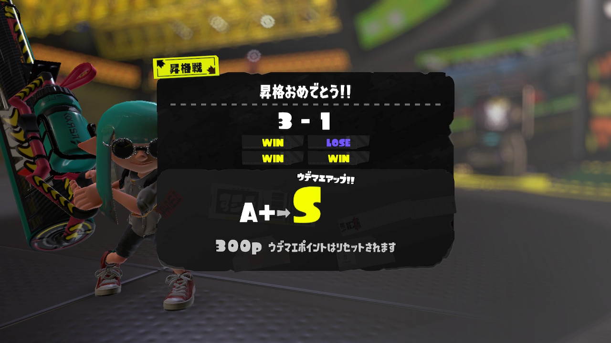

こんにちは、ザクザク食感です。
最近調子が悪い
体は健康なんだけど心があんまりよくない感じがする
理由はたぶん仕事がしんどいから
Djangoっていう知らん言語の勉強させられてるんだけど、100人以上いる研修でやってるのが僕含めて4人しかいないから全然質問できないし（ただでさえ半端な関係値の人との会話が得意じゃないのに！）前任の人たちが何も残してない
言語の公式ドキュメントが不親切すぎるからググってもよくわからない 会社は本すら買ってくれないから自分で買うしかない ぜｔｔｔｔｔｔｔｔｔｔったい自分では買わないけど
だからずっとがむしゃらに試行錯誤するしかなくて、できない自分のことがどんどん嫌になってくる
他の課題やってる人たちはHTMLの基礎編みたいな見るからに簡単そうなことしててマジで羨ましい
会社の人たちと仲良くしたくないから友達もいないし 高専とか小中学生の頃の友達に会ったらみんな楽しそうで羨ましくて心から笑えない
↑これ全部僕の卑屈さが引き起こしていることわかってるから読みながらイライラしないで；； 僕が一番僕のキモいところわかってるから……
ずっとこんな調子だから文字を書こうにも絵を描こうにも曲つくろうにも黒いものしか出てこないしそれすらマイナスの心に圧殺されて何も生みだせないしもっと自己嫌悪に陥っちゃう
からしばらくはインプットに徹します……
じゃあ何しようかな……今手元にあるのは
くら～～～～～～～い！！！！！！！！
なんで僕の身の回りって暗いコンテンツしかないねん！！！
まぁ好きだからですけど……
今は精神がよくないのでとりあえず呪術廻戦2期だけは見て、残りは今度見ることにしました
でLAMBと犬王を見ました←いやどっちも暗いやないか～～～い
LAMBはほぼセリフないのに演出とか映像の見せ方で怖さを演出してるのがめちゃくちゃよかった 人間のエゴがこれでもかってくらい感じられる話でした
犬王は琵琶法師ミュージカルだった どろろとボヘミアンラプソディーとかぐや姫の物語とかのいい要素が感じられた 映像とアヴちゃんの声がよかった
あと久々にスプラをしたらめっちゃ楽しかった

スプラ1ではロラコラでSまでいったから復刻したロラコラ使おうと思ったけど、テイオウイカが使えなすぎてタコ負け（イカだけど笑）したのでカローラデコに乗り換えました
意外といろいろできてるな？対処療法にも限界があるかもだけど
宵越しの銭は持たん……飽きるまで生きるだけですね
それでは、さようなら。